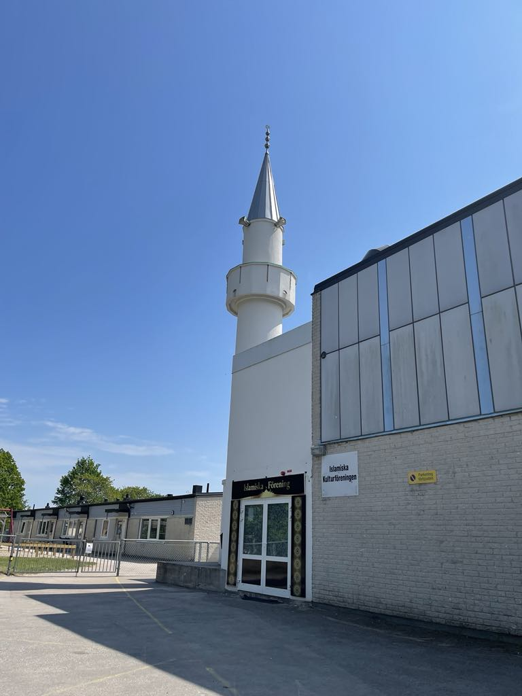
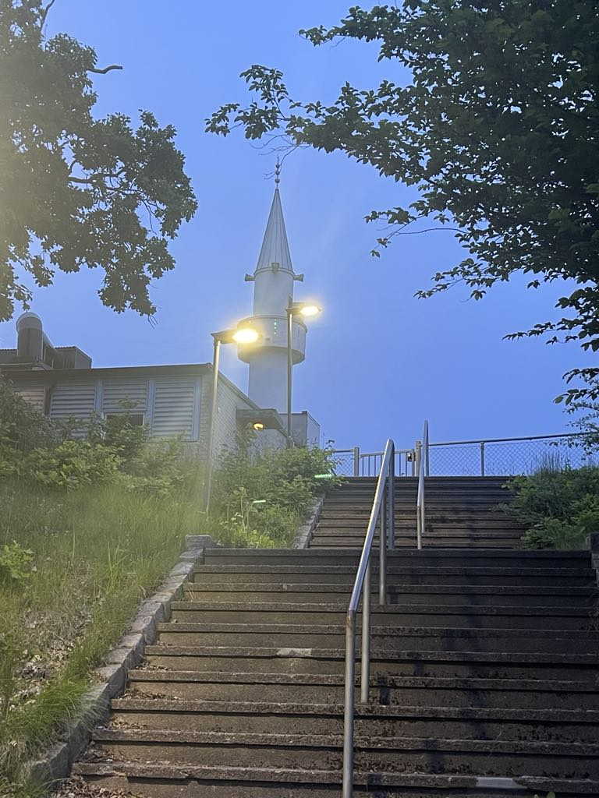
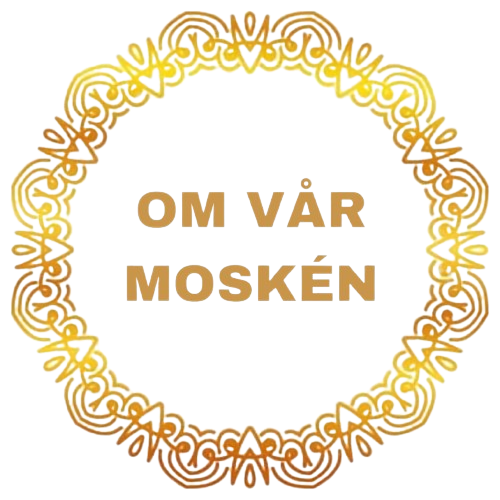

VÄLKOMMEN TILL Islamiska Kulturföreningen i Karlskrona - IKFK
Islamiska Kulturföreningen i Karlskrona - IKFK


Vår Moské ligger i Kungsmarken område. Lokalen är 350 kvadratmeter. med en övervåning som rymmer till ca 400 personer som besöker moskén vid olika tillfälle.
________________________________________________________________
Många muslimer samlar, för att utföra bönen fem gånger dagligen, samt för att lyssna på Imamens undervisningar.
Moskén är inte bara en andlig plats utan också en kulturell omgivning, eftersom att alla medlemmar kommer ursprungligen från olika länder. Här samlas vi under ett tak av kärlek och bröderskap.

نحن نرحب بكم في صفحتنا خلال هذا الشهر الفضيل من رمضان، حيث نقدم لكم تجربة فريدة تملأ قلوبكم بالسكينة والإيمان. هنا، لا تجدون فقط صفحة عادية، بل موطنًا للروحانية والتأمل، حيث نتشارك معكم لحظات الخشوع والدعاء.
نحن هنا لنوجهكم في رحلتكم الروحية، ونقدم لكم خطة شاملة تساعدكم على استثمار هذا الشهر الكريم بشكل أفضل. نريدكم أن تكونوا فضوليين ومتحمسين لمعرفة تفاصيل هذه الخطة، لأننا على يقين بأنها ستغير حياتكم إلى الأفضل.
المراجع:
هناك بعض المراجع الاخرى ايضا